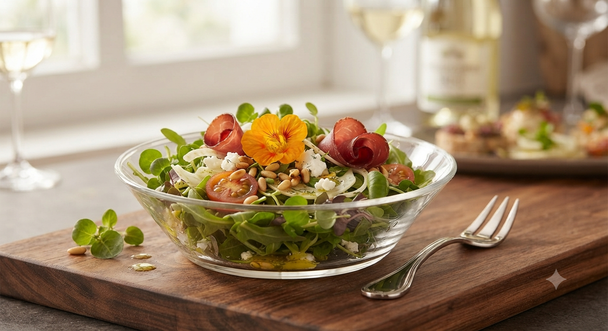

Strengths
北の大地で奏でる、
南仏の旋律
北海道の恵まれた食材を、南フランス・プロヴァンスの技法で。
伝統と現代が融合した、ここだけの味わいをお届けします。

01
契約農家の息吹をそのままに
季節の契約農家野菜や地中海風の魚介料理が、口コミで高い評価をいただいております。ブイヤベースコースやフレンチ鍋など、季節の移ろいを箸で感じるメニューの数々。
- 自家製スモークサーモン
- 十勝牛の熟成グリル
- 伝統的なブイヤベース
02
五感を満たす空間と、
五感を満たす空間と、
ソムリエの誘い
一軒家レストランならではの明るく広々とした店内。特にサンルーム席は、柔らかな光に包まれた特別な時間を提供します。在籍するソムリエが、料理に完璧に調和するワインをセレクトいたします。